Народный клуб мастеров народного творчества и самодеятельных художников "Ля возера".
Работает при НИУК "Браславское районное объединение музеев». В 1980 году при Доме культуры г. Браслава был основан клуб самодеятельных художников. Он объединял 14 художников-любителей и занимался развитием и пропагандой изобразительного искусства в районе. Его президентом был избран браславский художник Тэафан Барковский. С 1986 года клуб начал работать при историко-краеведческом музее. К работе в нем присоединились мастера соломоплетения, вязания, вышивки, ткачихи, гончары, резчики. Объединение получило название "Клуб народных мастеров и самодеятельных художников " Ля возера ". Первым руководителем его стала директор музея Подолян Г.С.В 1989 году клубу было присвоено звание "Народный любительский коллектив". С этого времени и до 1996 года руководителем клуба Янина Ермолаева, в 1996-1998 Светлана Белова, с 1998-2003 Тамара Ундруль, с 2003 Наталья Парахневич.
Цель клуба - возрождение, развитие и популяризация традиционных ремесел и народного творчества.Клуб объединяет 61 мастеров и художников от 29 до 87 лет. Занимается организацией выставок народного творчества в г. Браславе, проведением праздников, обучением ремеслам всех желающих на занятиях кружков и практикумах, поиском новых мастеров и художников.
Клуб ежегодно участвует в международных праздниках и фестивалях "Славянский базар", "Звіняць цымбалы і гармонік" в г.Поставы, республиканских фестивалях "Беларусь - моя песня" 1998 г., "Вечнозеленое дерево ремесел" 1996 г., "Живые источники " 2006 г., фестивалях "Дожинки" в г. Полоцке, Орше, Кобрине, Лиде, г.Городке, "Праздниках письменности" в г.Поставы, Полоцке и г.Глубокое, " Фестивале национальных культур " в г.Миоры. Мастера клуба проводят выездные выставки на районных и областных праздниках.
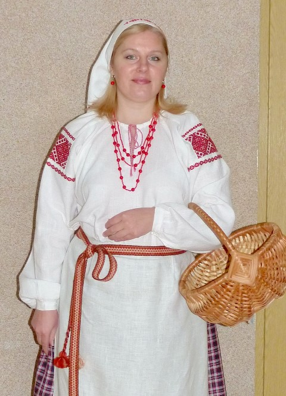
Наталья Парахневич
Является членом клуба «Ля возера» с 1995 года (с 2003 руководитель).
Мастерству обучалась самостоятельно, после продолжила обучение на художественно- графическом факультете ВГПИ им. Кирова. Сейчас для совершенствования использует журналы и энциклопедии по рукоделию, материалы, собранные в фондах музея г. Браслава. Для вышивки использует льняные ткани и хлопчатобумажные нитки «мулине». Владеет техниками вышивки: крестик, гладь, мережка, протяжка и другими. Вышивает с помощью пялец или рамы. Вышивает декоративные панно в жанре натюрморта в белорусском стиле, иконы. Совмещает различные техники вышивке на одном полотне. Вышивает крестиком рушники и элементы традиционного костюма. Работы хранятся в фондах НИУК БРОМ г. Браслава, и частных коллекциях в Беларуси, Латвии, России.
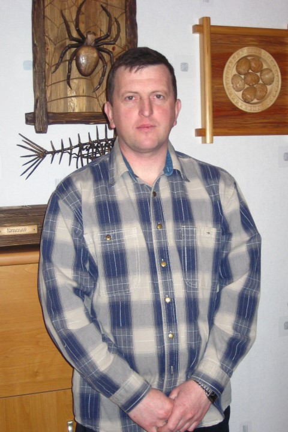Михаил Парахневич
Творчеством начал заниматься во время учёбы в институте в 1991 году.Резьбе учился на художественно – графическом факультете ВГПИ им. Кирова у преподавателя Хитько Ивана Павловича. Занимается резьбой: геометрической, плоскорельефной, рельефной, мелкой пластикой, скульптурой и точением по дереву. Для резьбы использует древесину липы, для точения берёзу, для изготовления мебели сосну. Использует для работы деревообрабатывающие станки, электроинструменты, комплект резцов. Излюбленное изделия мастера – декоративное панно в жанре натюрморта с использованием резьбы, точения, состаривания дерева.Работы мастера находятся в частных коллекциях и интерьерах Беларуси, России, Латвии.
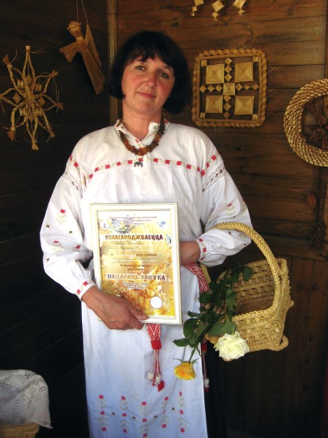
Элеанора Зинкевич
С 1992 учавствует в выставках народного творчества, член браславского клуба мастеров и художников «Ля возера». Занимается плетением из соломы: шляпы, шкатулки, декоративные панно, цветы. Используя традиционные мотивы и виды плетения создаёт авторские изделия. Наиболее известные работы: «Песнь паўстанскаму каню», серия декоративных панно по мотивам годовых праздников. С 1992 года преподаёт соломоплетение. Коллекция работ хранится в фондах браславского музейного объединения. Награждена грамотами и дипломами браславского и витебского исполкомов, дипломантка выставок «Вечнозелёное древо ремёсел», областного и республиканского конкурсов «Беларусь – моя песня», областной выставки «Жывая легенда».
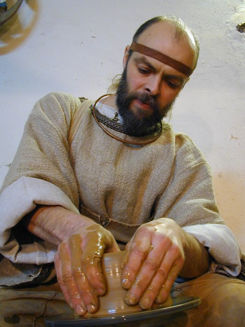Валерий Зинкевич
Начал заниматься гончарством в 1993 году, окончил курсы по гончарству при Витебском ОНМЦ. Работ за это время сделано много, больше тысячи. Занимается изготовлением реплик керамической посуды времен железного века, раннего и позднего средневековья а также этнографической гончарной посуды Браславщины. Реконструкции лепной керамики исторических эпох учился самостоятельно, но под влиянием и консультацией археологов Г.Семенчука, А.Егоейченко, Н.Плавинского. Использует книги по археологии и коллекции этнографической посуды из Браславского музея. Мастер работает с местной глиной, использует механический гончарный круг для этнографической керамики и примитивный гончарный станок с неподвижной деревянной осью для лепной посуды. Имеет комплект деревянных и костяных инструментов для нанесения арнаментав. Имеет печку на дровах для обжига керамики, также проводит обжиг в яме.
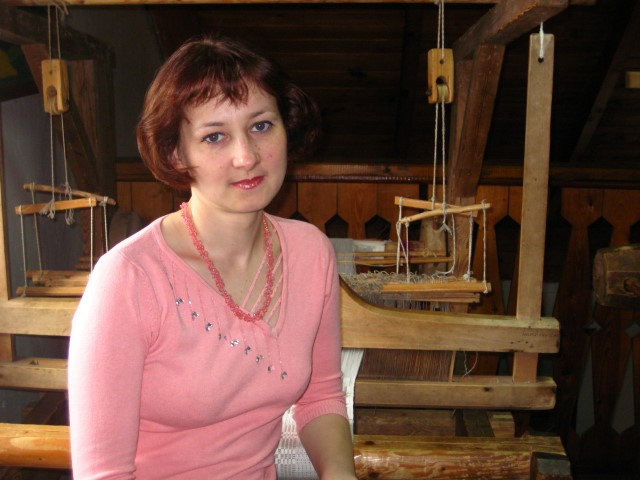
- Анжела Лукьянец
Занялась ткачеством в 2005 году. Обучалась мастерству на кружке ткачества в МТК г. Браслава у мастера Антонины Кавалык. Член клуба «Ля возера» с 2006 г. В работе использует лён, шерсть, нитрон, хлопок, болотную траву, соломку, обрезки тканей. Владеет техникой двухнитового , четрёхнитового, синельного ткачества. Имеет мастерскую, станок ткацкий «кросна» этнографический, все необходимее инструменты и приспособления. Изготавливает салфетки, рушники, покрывала и др. Излюбленным изделием является тканая дорожка. Мастер самостоятельно восстановила технику ткачества «синельки» из ниток и тканей. Изделия мастера хранятся в фондах НИУК БРОМ, частных коллекциях и интерьерах жителей Браслава и других городов Беларуси.
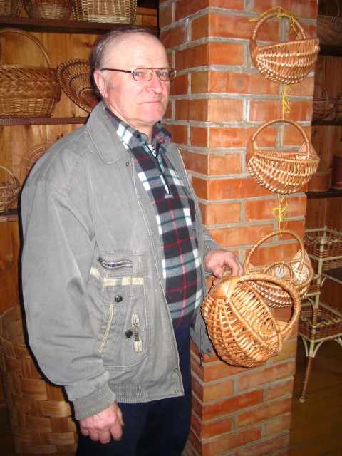 Владимир Лукьянец
Занялся ремеслом в 90- ых гг. прошлого века. Член Белоруского Союза мастеров, член браславской студии мастеров и художников «Ля возера». занимается изготовлением мебели из лозы: кресла, кресла-качалки, столы, диваны , подставки под цветы, этажерки.Продолжает традиции изготовления меястечковой мебели. Учился от своего отца – Лукъянца Константина Иосифовича, известного на Браславщине мастера лозоплетения. Для плетения использует лозу определённого вида. Имеет мастерскую и все необходимые инструменты и приспособления. Вёл кружок плетения из лозы в МТК г. Браслава. Имеет много учеников, в том числе обучил своего сына Сергея. Занимается изготовлением мебели из лозы: кресла, кресла- качалки, столы, этажерки и т.д. Продолжает местную традицию изготовления мебели. Награждён грамотами браславского райисполкома за возрождение традиций, многочисленными грамотами витебского облисполкома за участие в областных выставках народного творчества.
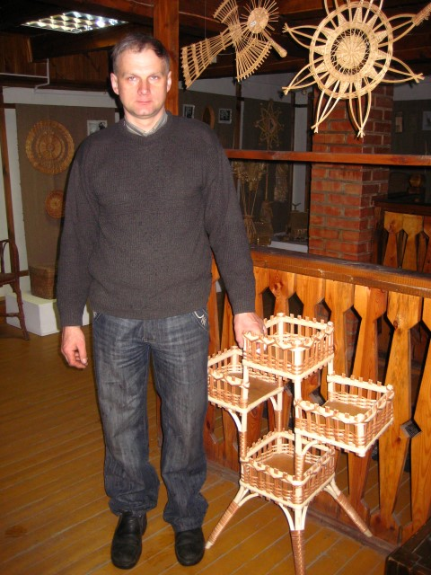Сергей Лукьянец
Мастерству обучался у своего отца Лукьянца Владимира Константиновича, потомственного мастера лозоплетения. Член клуба «Ля возера» с 1996г. Член Белорусского Союза Мастеров народного творчества. Использует для работы лозу определённого сорта, панели МДФ для столешниц и этажерок. Владеет традиционными способами и плетения. Имеются все необходимые инструменты и приспособления. Обучил ремеслу своего сына Андрея. Андрей принимает участие в выставках и других мероприятиях клуба. Занимается изготовлением мебели из лозы: кресла, столы, этажерки, подставки для цветов и т. д. В 2007 году стал призёром за коллекцию плетенной мебели в конкурсе «Лозовый прут», который проходил в рамках фестиваля «Славянский базар» в Витебске. Награждён грамотами Браславского райисполкома и Витебского облисполкома за участие в выставках народного творчества. Изделия мастера находятся и используются в интерьерах жилых, дачных и офисных помещений в Браславе, Минске, Полоцке, Витебске и других городах.
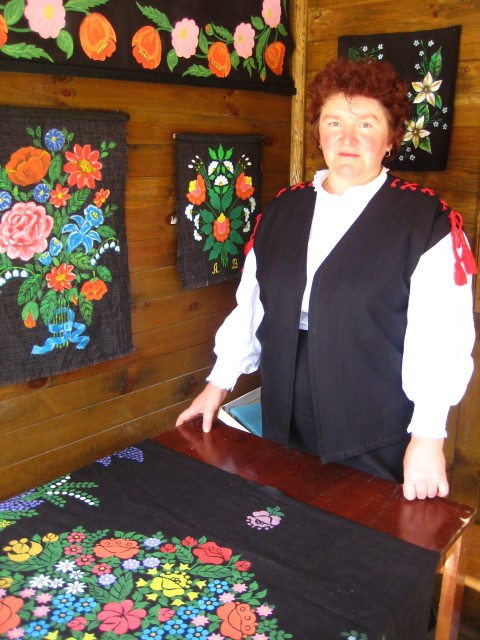Алина Выжиковская
Работает в Браславском районном объединении музеев научным сотрудником по фондовой работе. С детства любила рисовать. Воспитываясь в трудолюбивой семье маленькая Алина с детства помогала родителям, осваивала традиционные технологии ремесел. Алина Александровна владеет технологией лоскутного шитья ткани, валяния из шерсти, вязания на прутках, в том числе вязания традиционных орнаментированных варежек и перчаток. В 2008 году была направлена ??на курсы писанок в ОНМЦ г.Витебска, где познакомилась с различными техниками исполнения писанок. Попробовала рисовать самостоятельно, проанализировав перед этим коллекцию писанок из фондов Браславского объединения музеев. В итоге получились несколько работ: два видочка и рисованный ковер, которые будут представлены на празднике-конкурсе в Витебске. Сейчас Алина Александровна работает над ковром в технике штампавания.
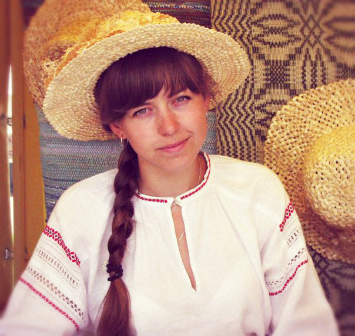Анна Колодынская
Начала заниматься ткачеством во время учёбы в колледже. Работает в музее традиционной культуры г. Браслава. Методист по ткачству. Является членом клуба «Ля возера» с 2009 года. Занимается ткачеством и плетением поясов, ткачеством рушников, элементов народного костюма. Для работы использует шерсть, полушерсть, лён, хлопок. Освоила ткачество на кроснах, на дощечках, «на ниту», ручное плетение. Участвовала в фестивалях: «Браславские зарницы» г. Браслав 2009-2015 гг.;Звіняць цымбалы і гармонік” г. Паставы 2009-2011 гг.;“Меч Брячислава” г.Браслав 2010-2015 гг.; «Славянский базар» г. Витебск 2010-2015 гг.; «Праздник ремёсел» г. Браслав 2009-2015 гг.; Ежегодная выставка мастеров клуба «Ля возера» «Калядныя ўзоры» г. Браслав 2009-2015 гг.; День города г. Полоцк 2012 г.;Свята пісьменства» г.Глубокае 2012 г.
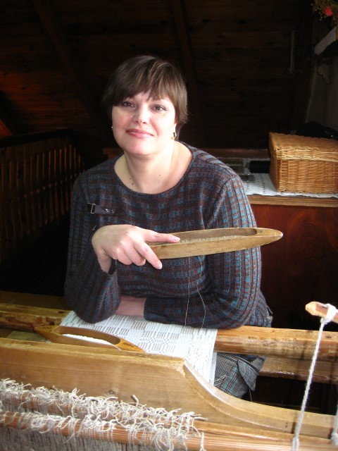Антонина Ковалык
Занимается ткачеством с 1995 года. Является членом клуба «Ля возера» с 1996 года. Ремеслу обучалась в Браславском музее на кружке ткачества у потомственной ткачихи Чепулёнок Алины Ивановны. Для ткачества льняные хлопчатобумажные, полушерстяные нитки. Имеет «кросна» и все необходимые инструменты и приспособления. Вела кружок ткачества в Музее традиционной культуры с 1995 по 2005 годы. Ученики мастера продолжают заниматься ткачеством, принимают участие в мероприятиях клуба «Ля возера». В 1997 и 1998 гг. стала призёрам конкурса ткачества «Матчыны кросны» в Витебске, в 2003 году – Лепеле. Мастер владеет традиционными техниками ткачества: Четырёхнитовым (дымка, переборка, саржевое плетение), двухнитовым(браное, выборное). Плетёт пояса саржевым и репсовым плетением, витые шнуры, на «дощечках», на «бёрдышке». Мастер отдаёт предпочтение возраждению традиционных браславских техник и изделий. Работы хранятся в фондах НИУК БРОМ г.Браслава, в ОНМЦ г. Витебска.
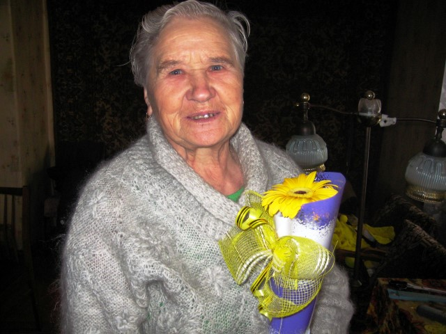Леангина Каминская
Рукоделием начала заниматься ещё в детстве. Мастерству обучалась у сестёр, соседей, односельчан. Является членом клуба «Ля возера» с 1990 года. Занимается вязанием на спицах и крючком. Увлекается изготовлением бумажных цветов, шитьём, ткачеством, вышивкой. Для вязания использует шерстяную, полушерстяную, капроновую нить, которую сама иногда прядёт. Для вязания крючком использует льняную, хлопчатобумажную нить, купленную в магазине, а так же тканевые полоски для изготовления ковриков. Имеются все необходимые инструменты и приспособления. В вязании освоила традиционные узоры и способы вывязывания носков, рукавиц и других изделий. Салфетки вяжет по готовому образцу, а не по схемам. Владеет техникой многоцветного орнаментального вязания крючком ковриков разной формы из полосок ткани. Работы мастера хранятся в фондах НИУК БРОМ, интерьерах браславчан.
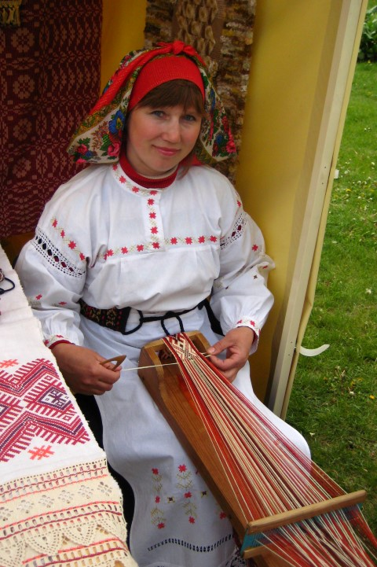
Людмила Рулевич
Является членом клуба «Ля возера» с 1995 года. Начала заниматься поясоплетением у браславской мастерицы Чепулёнок Алины Ивановны на кружке ткачества в музее. Мастер ткачества и плетения поясов. Увлекается плетением из соломки. Освоила ткачество на бёрдечке, на кроснах, на дощечках, «на ниту», ручное плетение. Супруг изготовил все необходимые инструменты: бёрдечко, дощечки, челноки, станок для плетения «на ниту». В Минске в 2001г. Во время выставки браславских мастеров в Фонде Рэриха давала мастер-классы по плетению поясов, в Браславе для учеников ЦДТ. А так же во время выездных выставок на городских праздниках и фестивалях. Самостоятельно освоила технику ткачества орнаментированных поясов на бердечке и «на ниту». Изучает семантику белорусского орнамента . Придумывает приспособления для удобства и ускорения плетения. Изделия мастера хранятся в фондах НИУК БРОМ г. Браслав, в частных коллекциях в Беларуси, России, Литве, Латвии, Польше.
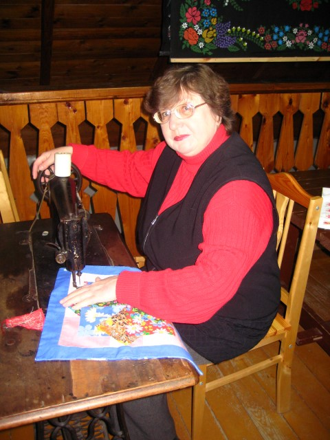Мария Дворская
Занимается шитьём из лоскута с 2006 года. Обучалась на кружке лоскутного шитья в музее традиционной культуры г. Браслава. Член клуба «Ля возера» с 2006 года. Увлекается различными рукоделиями. Использует ткани различного качества, декоративные шнурки, бисер, блёстки. Работает на швейной машинке и вручную. Ведёт кружок лоскутного шитья в музее традиционной культуры г. Браслава с 2007 года. Есть ученики,которые принимают участие в выставках клуба «Ля возера». Предпочитает традиционные приёмы выполнения изделий. Шьёт одеяла, покрывала, декоративные панно, салфетки, игрушки. Принимает активное участие в разработке и изготовлении сувенирных кукол в традиционном народном костюме. Работы хранятся в частных коллекциях и интерьерах г. Браслава, г. Витебска, г. Минска, Латвии, Украине, США, а так же в фондах НИУК БРОМ г. Браслава.
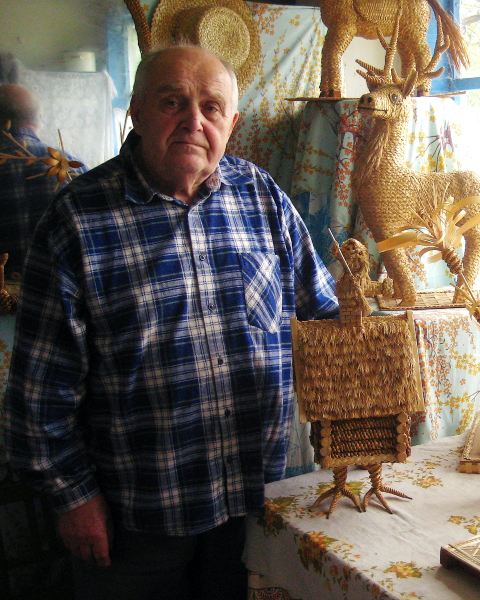
Михаил Черкас
Член клуба мастеров народного творчества «Ля возера». участник Великой Отечественной войны, работал директором Слободковского Дома культуры, учителем начальных классов и изобразительного искусства Слободковской средней школы Браславского района Витебской области. Награждён Орденом Отечественной войны І степени, почётной грамотой Министерства Культуры СССР за работу в Слободковском ДК, 1967 год – звание Заслуженный учитель БССР. Награждён грамотами Брасловского и Витебского и исполкомов, а также Министерства Культуры за участие в районных, областных и республиканских выставках народного творчества. Занимается плетением из соломки: декоративная посуда, шкатулки, шляпы, объёмная скульптура из соломки с использованием деревянно-проволочных каркасов, макеты архитектурных комплексов с использованием соломенных лент, колосъев, витых плетёнок, сюжетные композиции по мотивам белорусских сказок. Наиболее известные его работы: шкатулка – избушка на куриных ножках, объёмные сюжетные композиции: «Аист на крыше – мир на земле», «Пеўнік – залатыя жаронцы», «Лебедь, рак и щука», «Млын».
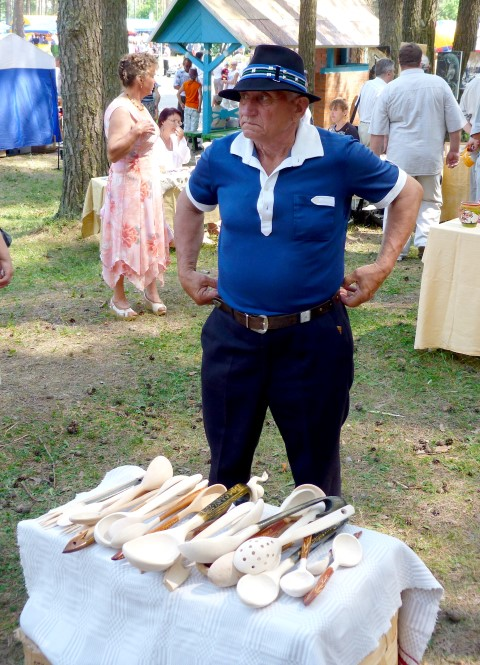Петр Друсь
Член клуба «Ля возера» с 1989 г. Мастер художественной обработки дерева. Резьбой занимается с детства. Резьбе учился у соседей по деревне и самостоятельно. Для работы использует липу. Пользуется самодельными резцами, ножом, топором. Мастер работает с липой. Излюбленное изделие- ложка утилитарно- декоративного назначения, украшенная резьбой. Вырезает также фигурки животных, скульптуру небольшого объёма. Увлекается рыбалкой, играет на народных музыкальных инструментах. Изделия мастера хранятся в фондах НИУК БРОМ г. Браслава, в частных коллекциях жителей Браслава и района.
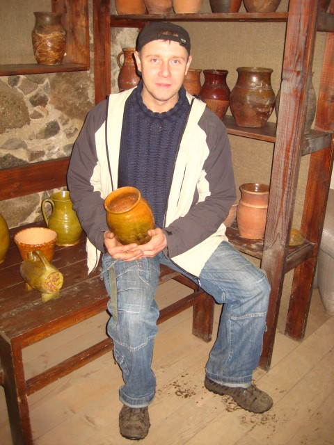Руслан Лабуть
Является членом клуба «Ля возера» 1997 года. Мастер- ремесленник (гончарство, керамика). Начал заниматься творчеством с детства. Лепил фигурки из глины. На кружке в МТК научился работать на гончарном круге. Мастерству обучался у браславского мастера- гончара Валерия Зинкевича на кружке керамики в МТК. Работает с глиной, которую заготавливает сам. Владеет техниками точения на гончарном круге, штамповкой, изготовления матриц для штампов. Имеет мастерскую с электрическим гончарным кругом и печь для обжига. Работает над созданием сувенира браславского региона. Изготавливает сувенирные бутылки, фляжки, кружки с тематическими штампами. Работы мастера хранятся в фондах НИУК БРОМ г. Браслава, домашних коллекциях многочисленных жителей и гостей города Браслава, Минска, Витебска.
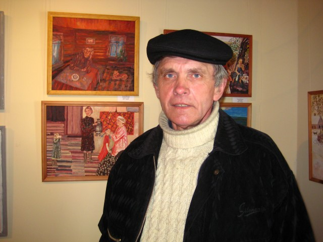Чеслав Жусель
Начал заниматься творчеством в 80-х гг. 20 ст. Обучался самостоятельно, учился в заочном Народном университете искусств (г. Москва). Член клуба «Ля возера» с 2005 года. Ежегодно принимает участие в выставках художников клуба «Вясне насустрач», фестивалях «Браславские зарницы», «Свята рамёстваў». Был участником выставки инситного искусства в Витебске в 2008г. В работе использует бумагу, картон, ДВП. Пишет гуашевыми и акриловыми красками. Пишет картины небольших форматов, используя привычный размер листа. Любимый жанр- сюжетная картина, на которой изображает сельский быт, традиционные праздники, труд простого человека. Картины художника хранятся в фондах НИУК БРОМ, в частных коллекциях в Минске, Браславе.
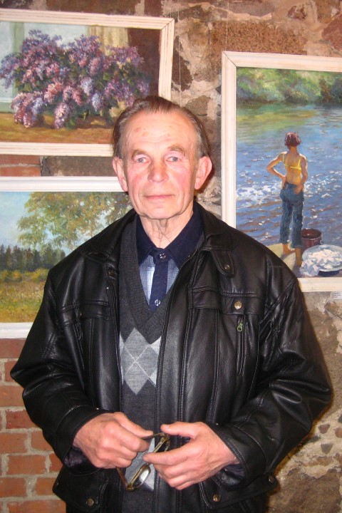Ян Ридико
Родился в деревне Барадиничи Браславского района. Его отец, Антон Павлович, хорошо рисовал, играл на скрипке, принимал участие в местном самодеятельном театре. Его талант передался сыну. Ян Риддико закончил Барадиничскую семилетнюю школу, потом - десятилетку. После того, как окончил Гродненский сельскохозяйственный институт, два года работал агрономом. Но мечта стать учителем его не покидала, и он поступил на заочное отделение Витебского педагогического института. Более 35 лет проработал учителем в родных Барадиничах, организовал и оформил школьный музей природы. Кстати, сейчас художнику уже 76 лет, но он не собирается прекращать свою творческую деятельность. Работает в разных жанрах: портрет, натюрморт, пейзаж. Ян Ридико - участник многих выставок, проходивших в музеях Беларуси.